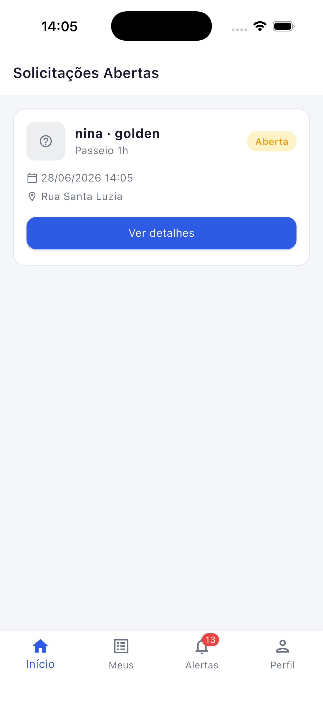
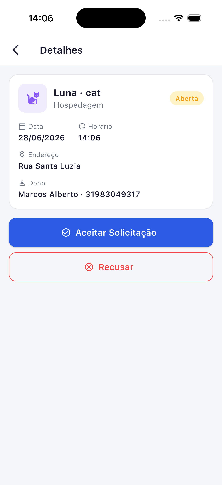
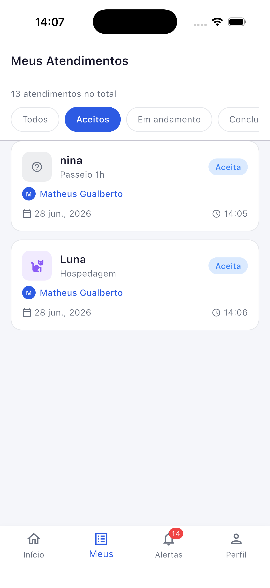
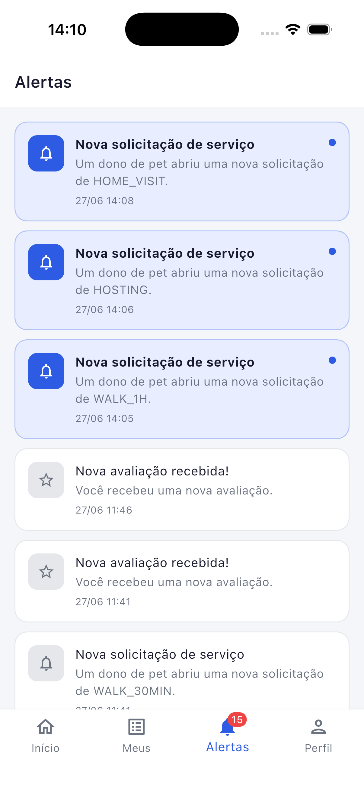

Plantão Pet — Sistema Distribuído com EDA, MOM e Clean Architecture
| Aluno | Marcos Alberto |
| Curso | Engenharia de Software — 5º Período — Noite |
| Disciplina | Lab. de Desenvolvimento de Aplic. Móveis e Distribuídas |
| Professores | Cleiton Silva Tavares e Cristiano de Macedo Neto |
| Semestre | 1º Semestre 2026 |
| Entrega | 03 de julho de 2026 |
O Plantão Pet é uma plataforma de matchmaking desenvolvida como Projeto Integrador da disciplina LDAMD. O sistema conecta donos de animais de estimação a cuidadores profissionais, viabilizando o agendamento de serviços como passeios, visitas domiciliares e hospedagem temporária. A motivação do domínio é a necessidade real de um mercado onde a descoberta de cuidadores confiáveis e o agendamento de serviços ainda ocorre majoritariamente por canais informais — como grupos de WhatsApp —, sem rastreabilidade ou garantia de qualidade.
O projeto foi desenvolvido em quatro sprints progressivas. A Sprint 1 definiu a arquitetura e implementou o backend REST com Node.js, Express e PostgreSQL via Prisma ORM. A Sprint 2 integrou o Apache Kafka como Middleware Orientado a Mensagens (MOM), substituindo chamadas diretas de notificação por um fluxo orientado a eventos. A Sprint 3 entregou o aplicativo Flutter do cliente — o Dono do Pet — com integração ao backend REST e recebimento de atualizações assíncronas via Socket.IO. Esta Sprint 4 completa o sistema com o aplicativo Flutter do prestador de serviços (Cuidador), demonstrando o fluxo de ponta a ponta com comunicação assíncrona real via MOM, conforme exigido pelo escopo da disciplina.
O presente relatório descreve a arquitetura implementada, as decisões técnicas tomadas ao longo do projeto, as dificuldades encontradas e as lições aprendidas com os padrões estudados. Os incrementos desta sprint incluem callbacks de navegação entre telas do Cuidador, seleção automática de pet no formulário de solicitação e a documentação completa do evento de cancelamento no fluxo Kafka.
O Plantão Pet adota uma arquitetura orientada a eventos (Event-Driven Architecture — EDA) com três camadas principais: os aplicativos Flutter (front-end móvel), o backend Node.js (lógica de negócio e API REST) e o Apache Kafka (middleware de mensagens).
A separação entre comandos REST e eventos Kafka é o princípio central da arquitetura. Toda ação que altera estado (criar solicitação, aceitar, iniciar, concluir, cancelar) é feita via REST. Toda atualização assíncrona resultante é propagada via Kafka → Consumer → Socket.IO. Os aplicativos nunca fazem polling: recebem atualizações no momento em que ocorrem.
O banco de dados PostgreSQL armazena todas as entidades do domínio: owners,
caregivers, pets, service_requests, reviews,
notifications. O Prisma ORM garante migrações versionadas e type safety nas
queries. O ambiente é gerenciado com Docker Compose — PostgreSQL, Kafka
(modo KRaft, sem Zookeeper), Kafka UI e a API Node.js rodam como serviços isolados com rede interna
dedicada, alinhado às práticas recomendadas para implantação de sistemas distribuídos em nuvem
(JOURNAL OF CLOUD COMPUTING, 2012–).
O aplicativo do Cuidador é o principal entregável desta Sprint 4. Implementado no mesmo binário
Flutter que o aplicativo do Dono, o perfil é determinado no cadastro e direciona para interfaces
distintas. O binário único reduz a superfície de manutenção e permite compartilhar widgets,
repositórios e o SocketService.
O app do Cuidador entrega 4 telas principais (superando o mínimo de 3 exigido),
organizadas em um BottomNavigationBar com IndexedStack — estado
preservado ao trocar de aba:




Tela 1 — Lista de solicitações (CaregiverHomeScreen):
exibe cards de todas as solicitações com status OPEN disponíveis — cada card traz
nome e espécie do pet, tipo de serviço, data/hora agendada e endereço de encontro. Quando uma
nova solicitação chega via Socket.IO (evento new_request), o card aparece
automaticamente sem nenhuma ação do usuário. Ao aceitar, o callback onAccepted()
navega automaticamente para a aba "Meus" — o cuidador não precisa trocar de aba manualmente.
Tela 2 — Detalhe e ação (CaregiverRequestDetailScreen):
mostra todos os dados da solicitação: pet (nome e espécie), tipo de serviço, data, horário,
endereço, nome e telefone do dono. Os botões de ação são condicionais ao status:
Aceitar Solicitação e Recusar (status OPEN),
Iniciar Serviço (status ACCEPTED) e
Concluir Serviço (status IN_PROGRESS). A tela consulta ambos os
providers (openRequests e requests) em cascata para manter consistência
durante transições de status.
Tela 3 — Meus atendimentos (CaregiverMyRequestsScreen):
lista todos os atendimentos aceitos pelo cuidador, com contador total e filtros horizontais
scrolláveis: Todos, Aceitos, Em andamento, Concluídos. Cada card exibe pet, tipo de serviço,
nome do dono, data e horário. Ao tocar, abre o detalhe com ações disponíveis para o status atual.
Tela 4 — Alertas (CaregiverNotificationsScreen):
exibe o histórico completo de notificações recebidas. Itens não lidos têm fundo azul claro e
um indicador de ponto. O badge numérico na aba é atualizado em tempo real pelo
NotificationProvider. Esta sprint incorporou o callback onNavigate():
ao tocar em uma notificação de nova solicitação, navega para a aba "Início" (0); ao tocar
em uma avaliação recebida (review.created), navega para "Perfil" (3).
A Tela de Perfil (CaregiverProfileScreen) exibe os dados
cadastrais do cuidador e a média de avaliações, atualizada ao tocar na aba via
GET /caregivers/:id.
A notificação de novas solicitações ao Cuidador ocorre sem polling, conforme exigido pela disciplina:
POST /service-requests
service_request.created no Kafka
new_request
SocketService no app do Cuidador recebe o evento
ServiceRequestProvider.loadOpen(token) recarrega a lista
NotificationProvider.load(token) recarrega notificações e incrementa o badge
O Cuidador vê a nova solicitação aparecer na tela sem precisar fazer nada, caracterizando comunicação assíncrona real via MOM — sem chamada REST direta entre os componentes.
Entregue na Sprint 3, o app do Dono também recebe atualizações em tempo real via Socket.IO. Funcionalidades principais:
OPEN), com remoção
imediata da lista ao Cuidador via evento request_cancelledO app possui 5 abas (Início, Pets, Cuidadores, Alertas, Perfil), superando o mínimo de 3 telas exigido. A tela de detalhe apresenta uma timeline de progresso visual com 4 etapas: criada → aceita → em andamento → concluída.
O Apache Kafka foi escolhido como MOM por três razões principais:
O Kafka foi configurado em modo KRaft (sem Zookeeper, estável a partir do Kafka 3.3), simplificando a infraestrutura Docker e reduzindo a latência de startup. O ambiente de containerização — PostgreSQL, Kafka, Kafka UI e API — é orquestrado via Docker Compose.
Todos os tópicos são consumidos pelo NotificationConsumer, que persiste notificações
no banco e as entrega via Socket.IO:
| Tópico Kafka | Evento de Domínio | Produtor |
|---|---|---|
service_request.created |
Nova solicitação criada pelo Dono | ServiceRequestService |
service_request.accepted |
Cuidador aceitou a solicitação | ServiceRequestService |
service_request.refused |
Cuidador recusou a solicitação | ServiceRequestService |
service_request.in_progress |
Cuidador iniciou o serviço | ServiceRequestService |
service_request.cancelled |
Dono cancelou a solicitação aberta | ServiceRequestService |
service.completed |
Serviço concluído pelo Cuidador | ServiceRequestService |
review.created |
Dono avaliou o Cuidador | ReviewService |
Cada evento carrega um payload JSON com os dados necessários para o consumer processar a notificação sem fazer chamadas adicionais ao banco:
{
"eventType": "service_request.accepted",
"requestId": "uuid-da-solicitacao",
"ownerId": "uuid-do-dono",
"caregiverId": "uuid-do-cuidador",
"caregiverName": "Carlos Melo",
"petName": "Rex",
"serviceType": "WALK_30MIN",
"scheduledAt": "2026-06-20T14:00:00.000Z",
"timestamp": "2026-06-19T10:23:45.123Z"
}O NotificationConsumer realiza três operações por evento recebido:
notifications do PostgreSQLroom: userId)
O consumer verifica deduplicação antes de persistir, usando a combinação
userId + eventType + requestId. Se já existir um registro com esses três valores, a
mensagem é descartada silenciosamente — proteção necessária porque o Kafka pode entregar a mesma
mensagem mais de uma vez em cenários de falha de rede.
O diagrama abaixo demonstra o fluxo de ponta a ponta, cobrindo todos os eventos do ciclo de vida de uma solicitação: criação, cancelamento (alternativo), aceite, início do serviço, conclusão e avaliação. Em nenhum momento existe chamada direta entre os apps — toda comunicação passa pelo MOM Kafka e é entregue via Socket.IO.
O screencast de entrega (3–5 minutos) mostra este fluxo completo com dois simuladores iOS rodando simultaneamente — um com perfil Dono, outro com perfil Cuidador — sem nenhuma atualização manual de tela.
Os dois aplicativos Flutter seguem os princípios de Clean Architecture descritos por Martin (2019), com regra de dependência unidirecional — camadas externas conhecem as internas, nunca o contrário:
| Camada | Artefatos | Responsabilidade |
|---|---|---|
presentation/ |
Screens, Providers, Widgets | Renderizar estado e capturar ações do usuário |
data/ |
Repositories, Models | Acessar a API REST, serializar/deserializar JSON |
services/ |
SocketService | Manter conexão WebSocket e despachar eventos |
core/ |
AppTheme, AppConstants, TokenStorage | Configurações e utilitários transversais |
Nenhum widget conhece URLs ou parsing JSON; nenhum repositório conhece a existência de telas.
O SocketService é criado em main.dart e injetado nos providers via
construtor, tornando cada componente testável de forma isolada.
Um único aplicativo Flutter serve Dono e Cuidador. O perfil é determinado no cadastro e
armazenado no JWT — no auto-login, AuthUser.role direciona para
OwnerMainScreen ou CaregiverMainScreen. Isso reduz a complexidade de
manutenção (uma base de código, um processo de build) e permite compartilhar widgets,
repositórios e SocketService.
O protocolo Socket.IO não suporta headers HTTP customizados de forma portável. O JWT é
passado como query parameter na URL de conexão (ws://host?token=eyJ...)
e validado por middleware no backend antes de associar o socket ao userId.
O modo KRaft (estável desde Kafka 3.3) elimina a necessidade do Zookeeper como terceiro serviço no Docker Compose, simplificando a infraestrutura e reduzindo o tempo de inicialização do ambiente de desenvolvimento.
Operações como aceitar solicitação atualizam a lista local imediatamente, antes de aguardar
resposta da API. Em caso de erro HTTP, o estado é revertido e a mensagem de erro é exposta no
campo error do provider.
O JWT é armazenado com flutter_secure_storage (Keychain no iOS,
EncryptedSharedPreferences no Android), evitando que o token fique legível em
texto plano no sistema de arquivos do dispositivo.
Problema: ao aceitar uma solicitação, ela precisa sair de
openRequests e entrar em requests simultaneamente. Durante a transição
o item poderia não ser encontrado em nenhuma das listas.
Solução: busca com fallback em cascata:
final request = srProvider.openRequests.firstWhere(
(r) => r.id == widget.request.id,
orElse: () => srProvider.requests.firstWhere(
(r) => r.id == widget.request.id,
orElse: () => widget.request,
),
);
Problema: ao renavegar, on(event, callback) era chamado
novamente, acumulando callbacks duplicados e causando chamadas redundantes à API.
Solução: o SocketService mantém um
Map<String, List<Function>>. O método off(event, callback)
remove o callback anterior antes de cada novo registro. Os providers registram
listeners apenas uma vez, no initState da tela shell.
Problema: datas salvas em UTC no banco eram exibidas em UTC no app, mostrando horários 3h adiantados para usuários em Brasília.
Solução: todas as exibições chamam .toLocal() antes de formatar:
scheduledAt.toLocal(). O DateFormat usa 'pt_BR' via
pacote intl.
heroTag entre FABs no IndexedStack
Problema: o Flutter lança exceção quando dois
FloatingActionButton com o mesmo heroTag coexistem em um
IndexedStack (todas as telas ficam em memória simultaneamente).
Solução: atribuição de heroTag único: 'fab_home' e
'fab_pets'. Particularidade do IndexedStack — diferentemente de
Navigator.push, onde apenas uma tela fica ativa por vez.
Problema: na primeira execução do ambiente Docker, o broker Kafka ainda está inicializando quando o consumer tenta se inscrever nos tópicos, resultando em erro de conexão.
Solução: o consumer usa um loop de retry com delay de 3 segundos
entre tentativas. O healthcheck no docker-compose.yml também configura a
api para aguardar o Kafka estar saudável antes de subir.
Com EDA, o ServiceRequestService apenas publica um evento ao Kafka; não sabe que
existem apps mobile, sockets ou banco de notificações. O NotificationConsumer,
completamente independente, decide o que fazer com o evento. Esta separação é o que Hohpe e
Woolf (2003) descrevem como desacoplamento temporal e espacial — produtor e
consumer não precisam estar ativos ao mesmo tempo, e novos consumers não requerem mudanças no
produtor.
Na prática, a EDA introduz consistência eventual: existe uma janela de tempo
entre o backend processar a requisição REST e o consumer processar o evento Kafka. A solução foi
disparar loadMine() e loadOpen() a partir dos eventos Socket.IO,
garantindo atualização da UI com delay de ~50–200 ms no ambiente local.
O Kafka se mostrou mais complexo de configurar do que o RabbitMQ, mas ofereceu vantagens
concretas: persistência em disco, log imutável para auditoria e suporte a consumer groups
para escalabilidade horizontal. Uma limitação observada foi a latência de startup
(~10–15 s após docker compose up), absorvida com retry automático no
backend.
Quando a API mudou um endpoint (de /owners/pets para /pets),
a alteração foi feita apenas no PetRepository, sem tocar em nenhuma tela ou
provider. Martin (2019) argumenta que a regra de dependência protege as regras de negócio das
mudanças nos detalhes de implementação — no projeto, essa proteção foi verificada empiricamente
ao longo das quatro sprints.
A separação entre comandos REST (que alteram estado) e eventos assíncronos (que propagam atualizações) resulta em um padrão próximo ao CQRS (Command Query Responsibility Segregation), descrito por Richardson (2018). Essa separação reduz a carga sobre a API REST e melhora a responsividade percebida dos aplicativos, pois o Dono e o Cuidador recebem atualizações via Socket.IO sem precisar re-consultar o servidor.
O Plantão Pet demonstra como os padrões estudados na disciplina — EDA, MOM, Clean Architecture e REST — podem ser aplicados de forma integrada em um sistema distribuído real. Um Dono cria uma solicitação no smartphone e, em menos de um segundo, o Cuidador vê essa solicitação aparecer na sua tela, sem nenhuma ação manual. O fluxo inverso — aceite e conclusão pelo Cuidador atualizando automaticamente o app do Dono — também funciona de forma assíncrona real.
A jornada de quatro sprints evidenciou que cada padrão resolveu um problema concreto: EDA desacoplou a lógica de negócio das notificações; Clean Architecture isolou mudanças de API sem refatorações em cascata; REST padronizou a interface de comandos; o Kafka garantiu que eventos não se perdessem mesmo sob condições adversas.
O maior aprendizado foi compreender que consistência eventual não é uma limitação a ser evitada, mas um trade-off consciente. Em troca da consistência imediata, o sistema ganhou desacoplamento real, escalabilidade e resiliência — qualidades que justificam a complexidade adicional de um MOM em qualquer sistema distribuído de produção.